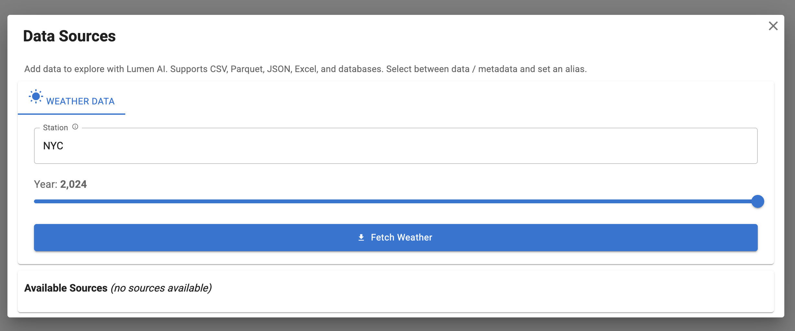

Source Controls¶

Source controls provide UI interfaces for loading data from external services.
Controls let users interactively fetch data from APIs, databases, or specialized sources directly in the Lumen UI sidebar. They're essential for integrating external data that isn't available as static files or database connections.
Why use source controls?¶
Source controls solve common data integration challenges:
- External APIs - Fetch data from REST APIs that require parameters or authentication
- User selection - Let users pick data subsets (years, regions, variables) before loading
- Dynamic data - Access real-time or frequently updated data sources
- Complex workflows - Handle multi-step data fetching and transformation
- Authentication - Manage API keys or credentials securely
Common use cases include:
- Financial data APIs (Federal Reserve, Yahoo Finance, etc.)
- Weather and climate data (NOAA, NASA, OpenWeather)
- Scientific datasets (genomics, astronomy, earth observation)
- Government portals (Census Bureau, Department of Labor)
- Internal corporate APIs and data warehouses
Built-in controls¶
| Control | Use for |
|---|---|
UploadControls |
Uploading local files (CSV, Excel, etc.) |
DownloadControls |
Fetching data from URLs (including Kaggle datasets) |
UploadControls stages selected files before processing. After selecting files, click Confirm file(s) to process them, or Clear selected to reset the staged selection.
Kaggle datasets¶
DownloadControls can fetch datasets directly from Kaggle. Paste a Kaggle dataset URL into the URL input field:
Each file in the dataset becomes a separate table in the same data source. This also works through the agent — users can ask the AI to load a Kaggle dataset by providing the URL.
Requires the kagglehub package:
If kagglehub is not installed, Kaggle URL support is silently disabled.
Creating custom controls¶
Custom controls inherit from BaseSourceControls and override two hooks:
| Hook | Purpose |
|---|---|
_load() |
Main hook - fetch data and return a SourceResult |
_render_controls() |
Provide UI widgets (rendered above load button) |
The base class handles loading states, error display, progress, output registration, and event triggering automatically.
Minimal example¶
import asyncio
import param
import pandas as pd
import lumen.ai as lmai
from lumen.ai.controls import BaseSourceControls, SourceResult
from panel_material_ui import IntSlider, TextInput
class WeatherControl(BaseSourceControls):
"""Fetch weather data from an API."""
station = param.String(default="NYC", doc="Weather station code in New York")
year = param.Integer(default=2024, bounds=(2020, 2024))
label = '<span class="material-icons">wb_sunny</span> Weather Data'
load_button_label = "Fetch Weather"
def _render_controls(self):
"""Provide widgets - rendered above the load button."""
return [
TextInput.from_param(self.param.station, label="Station", sizing_mode="stretch_width"),
IntSlider.from_param(self.param.year, label="Year", sizing_mode="stretch_width"),
]
async def _load(self) -> SourceResult:
"""Main hook - fetch data and return result."""
self.progress("Fetching weather data...")
url = (
f"https://mesonet.agron.iastate.edu/cgi-bin/request/daily.py?"
f"stations={self.station}&sts={self.year}-01-01&ets={self.year}-12-31&network=NY_ASOS&format=csv"
)
df = await asyncio.to_thread(pd.read_csv, url)
if df.empty:
return SourceResult.empty("No data returned")
return SourceResult.from_dataframe(
df,
table_name=f"weather_{self.year}",
year=self.year,
source="mesonet_api",
station=self.station,
)
ui = lmai.ExplorerUI(source_controls=[WeatherControl])
ui.servable()
SourceResult¶
SourceResult is the return type for _load() with convenient factory methods:
# From a DataFrame (most common)
SourceResult.from_dataframe(df, "table_name", year=2023, source="api")
# From an existing DuckDB source
SourceResult.from_source(my_source, table="users")
# Empty result (no data loaded)
SourceResult.empty("No data returned from API")
Progress reporting¶
The self.progress() helper provides a simple API:
# Indeterminate (spinner)
self.progress("Loading metadata...")
# Determinate with percentage (0-100)
self.progress("Downloading...", value=50)
# Determinate with current/total (auto-calculates %)
self.progress("Downloading...", current=500, total=1000)
# Increment pattern for loops
self.progress("Processing files...", total=len(files))
for f in files:
process(f)
self.progress.increment()
# Clear progress
self.progress.clear()
Class attributes¶
Customize appearance with class attributes:
| Attribute | Default | Purpose |
|---|---|---|
label |
"" |
HTML label shown in sidebar |
load_button_label |
"Load Data" |
Button text |
load_button_icon |
"download" |
Material icon name |
load_mode |
"button" |
"button" or "manual" |
Manual load mode¶
For controls where loading is triggered by something other than a button (like clicking a table row), use load_mode="manual":
class CatalogBrowser(BaseSourceControls):
"""Browse and select from a catalog."""
load_mode = "manual" # No load button
def __init__(self, **params):
super().__init__(**params)
self._layout.loading = True # Show spinner during init
pn.state.onload(self._load_catalog)
def _render_controls(self):
self._table = Tabulator(on_click=self._on_click, ...)
return [self._table]
def _load_catalog(self):
self._table.value = fetch_catalog()
self._layout.loading = False
async def _on_click(self, event):
# Use _run_load() for lifecycle management
await self._run_load(self._fetch_row(event.row))
async def _fetch_row(self, row_idx) -> SourceResult:
self.progress("Downloading...")
data = await download(row_idx)
return SourceResult.from_dataframe(data, "selected_data")
Progressive disclosure and reactive updates¶
For complex controls, you may want to update options dynamically (e.g., changing the available years when a dataset is selected). Use param.depends with watch=True:
@param.depends("dataset", watch=True)
def _update_year_options(self):
new_options = fetch_years_for_dataset(self.dataset)
self._year_select.options = new_options
Best practices¶
- Use
asyncio.to_thread()for blocking API calls to avoid freezing the UI - Report progress with
self.progress()for long operations - Return
SourceResult.empty()with a message when no data is available - Add metadata to help LLM agents understand the data context
- Validate inputs before making expensive API calls
- Cache API responses when possible to avoid redundant calls
- Use
normalize_table_name()to ensure DuckDB-compatible table names
Parametric controls¶
For common patterns like wrapping Python functions or fetching from URL templates, Lumen provides higher-level controls that handle widget generation automatically.
CodeSourceControls¶
Wrap Python functions or object methods as data sources. Signatures are introspected to generate widgets automatically.
Pattern 1: Wrap standalone functions
from lumen.ai.controls import CodeSourceControls
def download_census_data(
dataset: str = "acs/acs5",
vintage: int = 2022,
state: str = "*",
) -> pd.DataFrame:
"""Download Census data for US geographies."""
import censusdis.data as ced
return ced.download(dataset=dataset, vintage=vintage, state=state)
controls = CodeSourceControls(
functions={"Download Census Data": download_census_data},
table_name="census_data",
)
Pattern 2: Wrap object methods
from massive import RESTClient
client = RESTClient(api_key=os.environ["MASSIVE_API_KEY"])
controls = CodeSourceControls(
instance=client,
methods=["list_aggs", "get_last_trade", "get_ticker_details"],
table_name="prices",
)
Customizing parameters with param_overrides
Replace auto-detected parameter types with custom widgets.
import param
controls = CodeSourceControls(
instance=client,
methods=["list_aggs"],
param_overrides={
"list_aggs": {
# Full replacement with param.Selector
"ticker": param.Selector(
default="AAPL",
objects=["AAPL", "MSFT", "NVDA", "GOOGL"],
),
"timespan": param.Selector(
default="day",
objects=["minute", "hour", "day", "week"],
),
# Dict merge for simple overrides
"multiplier": {"default": 1, "bounds": (1, 100)},
"limit": {"default": 5000, "bounds": (1, 50000)},
},
},
skip_params=frozenset({"self", "cls", "return", "raw", "params"}),
)
| Parameter | Purpose |
|---|---|
instance |
Object whose methods to expose |
methods |
List of method names to expose |
functions |
Single callable or {name: callable} dict |
param_overrides |
{action_key: {param: override}} — action_key is the method name (or function/dict key); override is a param.Parameter or dict of kwargs |
skip_params |
Parameter names to exclude from UI |
table_name |
Default table name for results |
URLSourceControls¶
Subclass to fetch data from URL templates. Parameters declared as class attributes become UI widgets, and their values are interpolated into the URL.
import datetime
import param
from lumen.ai.controls import URLSourceControls
class MesonetDailyControls(URLSourceControls):
"""Fetch daily weather observations from Iowa Environmental Mesonet."""
url_template = (
"https://mesonet.agron.iastate.edu/cgi-bin/request/daily.py"
"?stations={stations}&network={network}&sts={sts}&ets={ets}&format=csv"
)
stations = param.String(default="SEA", doc="Station identifier(s)")
network = param.Selector(
default="WA_ASOS",
objects=["CA_ASOS", "IL_ASOS", "NY_ASOS", "WA_ASOS"],
)
sts = param.CalendarDate(
default=datetime.date.today() - datetime.timedelta(days=7),
doc="Start date",
)
ets = param.CalendarDate(
default=datetime.date.today() - datetime.timedelta(days=1),
doc="End date",
)
label = '<span class="material-icons">thermostat</span> Weather Data'
Preprocessing parameters
Override _fetch_data to transform user input before the URL is built:
class MesonetDailyControls(URLSourceControls):
# ... params as above ...
async def _fetch_data(self, action_name: str, **params) -> SourceResult:
# IEM uses 3-letter FAA codes; strip ICAO 'K' prefix users often add
raw = params.get("stations", "")
params["stations"] = ",".join(
s[1:] if len(s) == 4 and s.startswith("K") else s
for s in (t.strip() for t in raw.split(","))
)
return await super()._fetch_data(action_name, **params)
| Class attribute | Purpose |
|---|---|
url_template |
URL with {param_name} placeholders |
| Class-level params | Become UI widgets; values interpolate into URL |
label |
HTML label in sidebar |
Using with SourceAgent¶
When you pass source_controls to ExplorerUI, the SourceAgent can invoke them programmatically based on user queries:
from lumen.ai.agents import SourceAgent
from lumen.ai.ui import ExplorerUI
ui = ExplorerUI(
agents=[SourceAgent()],
source_controls=[MesonetDailyControls(), UploadSourceControls()],
)
The agent sees each control's actions as tools and can call them with appropriate parameters extracted from the user's question.
See also¶
- Building a Census Data Explorer — Complete walkthrough with BaseSourceControls
- Building a Weather Data Explorer — URLSourceControls tutorial with preprocessing